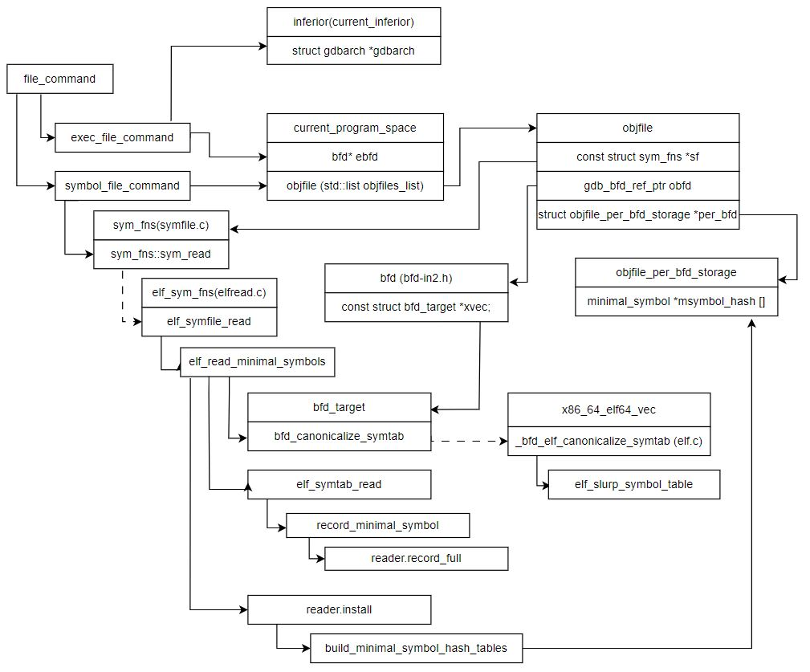

1. Load symbol table
1.1. Add file command
- file_command
- exec_file_command – exec.c link
- set current_program_space bfd
- set current_inferior gdbarch
- symbol_file_command – symfile.c link
- Refer add "file" command link
1.2. Create objfile
- symbol_file_command – symfile.c link
- create objfile and add it to current_program_space
1.3. Load minimal symbol tables ( non–debugging symbols from symtab section)

- elf_symfile_read – elfread.c link
- read all symbols from ELF symtab section symtab-section
- build hash table, map symbol names to addresses
- Refer elf_symfile_read – elfread.c link link
- Refer 调试变量符号可能不在 .symtab 段中
1.4. Load partial symbol tables ( debugging symbols from dwarf_xxx section)
- objfile::require_partial_symbols – symfile–debug.c link
- cooked_index_functions::read_partial_symbols – read.c link
- dwarf2_has_info
- dwarf2_build_psymtabs
- dwarf2_build_psymtabs_hard
- Read detail code later – 2023/10/04 @TODO